▲ 2027년형 쉐보레 트레일블레이저의 주행 컷. 미국 판매는 2027년 늦봄(late spring) 예정이다 ⓒ Chevrolet (chevrolet.com 2027 트레일블레이저 공식 갤러리)
"미국에 새 트레일블레이저가 나왔다는데, 내가 사는 한국의 트레일블레이저랑 뭐가 다른 거지?" 이런 궁금증이 들었다면 맞는 글이다. 2027년형 미국형은 Z71이라는 새 트림이 생기고 화면과 안전 사양이 커졌다. 한국에서 파는 모델은 배기량이 같은 1.3리터급 터보를 쓰지만 트림 구성도, 사륜구동을 얹는 방식도, 가격 체계도 꽤 다르다.
이 글은 쉐보레 미국 공식 사이트의 2027년형 소개 페이지와 한국GM 쉐보레 공식 사이트·2026년 10월 전차종 가격표를 직접 열어 대조했다. 미국 가격은 달러로만 적었고 원화로 바꾸지 않았다. 2027년형 미국 가격은 공식 페이지에 아직 숫자가 비어 있어서, 확인된 2026년형 공식 가격과 구분해 적는다.
1. 2027년형 미국 트레일블레이저, 무엇이 바뀌었나
가장 큰 변화는 트림 정리다. 쉐보레 미국 공식 사이트의 2027년형 소개 페이지에는 LT·RS·Z71 세 모델이 올라와 있다. 2026년형 공식 페이지의 LS·LT·ACTIV·RS 네 트림과 비교하면, 가장 싼 LS와 ACTIV 이름이 2027년 목록에서 보이지 않고 새 오프로드 지향 트림 Z71이 들어왔다. 공식 FAQ는 LT를 "기본 트림", Z71을 "이번에 새로 추가된 트림"으로 설명한다.
ACTIV가 Z71로 대체됐다고 직접 밝힌 공식 문구는 찾지 못했다. 다만 두 트림 모두 오프로드 서스펜션 튜닝과 스키드 플레이트를 내세우는 성격이라 사실상 자리를 이어받은 것으로 보인다.
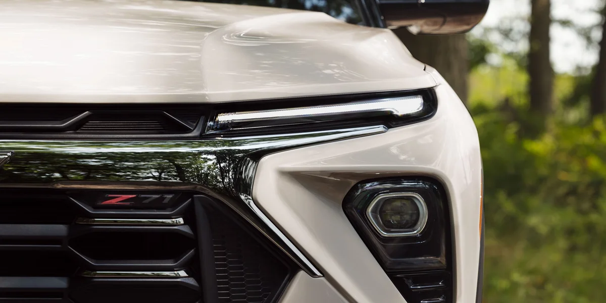
▲ 2027년형 트레일블레이저 전면부 근접 컷. 그릴 아래쪽에 새 트림 이름 Z71 배지가 보인다 ⓒ Chevrolet (chevrolet.com 2027 트레일블레이저 공식 갤러리)
| 트림 | 공식 소개 문구에서 확인되는 특징 | 가격 |
|---|---|---|
| LT | 1.3L 터보 기본, 11.3인치 터치스크린·11인치 계기판, 앞 동반석 폴드플랫 시트, 액티브 노이즈 캔슬레이션, 키리스 오픈&스타트·원격 시동, 구글 빌트인 | $XX,XXX(미공개) |
| RS | 19인치 카본 플래시 메탈릭 휠, RS 배지와 붉은 포인트 실내, 열선 플랫바텀 스티어링 휠, 투톤 루프(선택)·파노라믹 선루프(선택) | $XX,XXX(미공개) |
| Z71 | AWD 기본, 17인치 다크그레이 휠·스포츠 터레인 타이어, 오프로드 서스펜션 튜닝, Z71 배지, 젯 블랙&스톰 스카이 그레이 실내에 오렌지 포인트, 앞 스틸 스키드 플레이트 | $XX,XXX(미공개) |
출처: 쉐보레 미국 2027 트레일블레이저 소개 페이지(2026년 10월 17일 확인). 가격 칸은 공식 페이지에 "Starting at $XX,XXX"로만 표기돼 있다.
공식 사이트의 트림 선택 이미지로 세 트림의 겉모습을 비교해 보면 차이가 한눈에 들어온다. 이 이미지들은 트림 이름이 붙은 파일이며, 사진 속 차체 색이 판매 색상 전체를 대표하지는 않는다.
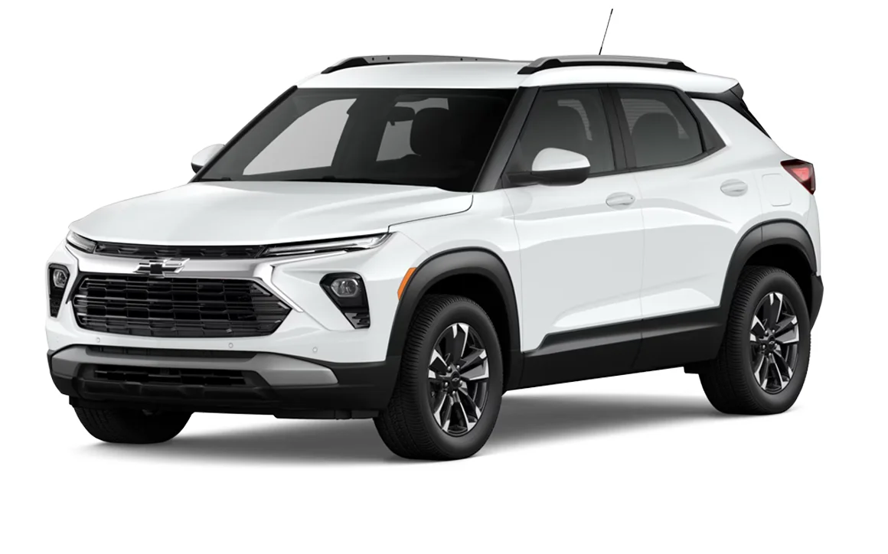
▲ 2027년형 LT(공식 트림 선택 이미지, 흰색 외장). 기본 트림이지만 1.3L 터보와 11.3인치 화면이 들어간다 ⓒ Chevrolet (chevrolet.com 2027 트레일블레이저 공식 페이지)
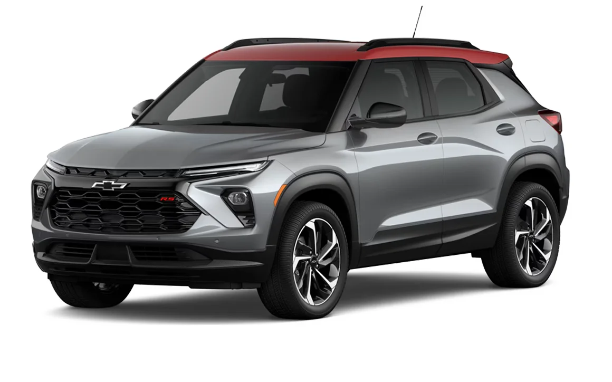
▲ 2027년형 RS(공식 트림 선택 이미지, 회색 외장에 붉은 루프). 공식 소개 문구는 투톤 루프를 선택 사양으로 안내한다 ⓒ Chevrolet (chevrolet.com 2027 트레일블레이저 공식 페이지)
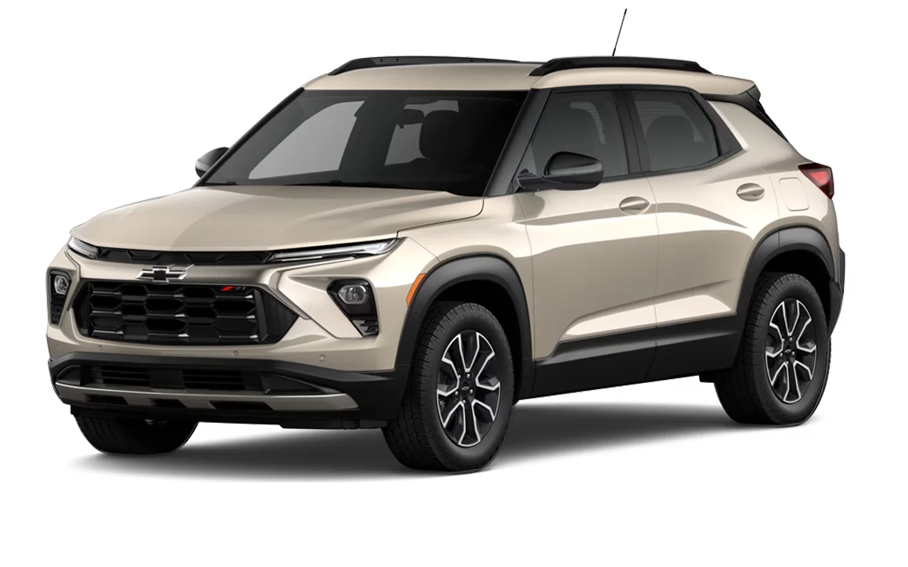
▲ 2027년형 Z71(공식 트림 선택 이미지). 파일명 기준 Z71 구성이며, 사진만으로 Z71 배지는 확인되지 않는다 ⓒ Chevrolet (chevrolet.com 2027 트레일블레이저 공식 페이지)
실내와 외관도 바뀐다. 공식 페이지 기준으로 센터 콘솔을 다시 설계해 접이식 컵홀더와 수납을 늘렸고, 오토센스 전동 리프트게이트를 선택할 수 있다. 새 포인트 색으로 Z71에는 오렌지, RS에는 레드가 적용된다.
외장색은 선라이즈 오렌지와 라군이 LT·Z71에 추가되고, 기존의 캑타이 그린과 아이리디슨트 펄 트리코트는 단종된다. 판매 시기는 2027년 늦봄이고, 가격도 같은 시기에 공개된다고 공식 FAQ에 안내돼 있다. 쉐보레 미국 2027 트레일블레이저 바로가기
일부 외신은 컬럼식 시프터와 패들 시프터, 2열 송풍구 등이 더해진다고 전했다. 다만 이 내용은 쉐보레 미국 소개 페이지에서 확인하지 못했고 보도마다 설명이 달라, 이 글에서는 표에 넣지 않았다.
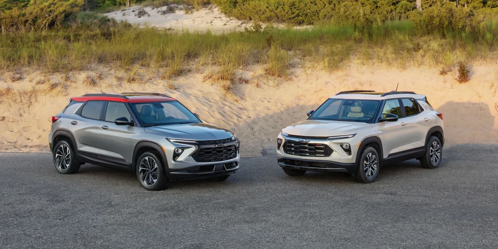
▲ 2027년형 트레일블레이저 두 대. 한 대는 붉은 루프를 얹었다(사진 속 차량의 트림은 공식 설명에 표기되지 않았다) ⓒ Chevrolet (chevrolet.com 2027 트레일블레이저 공식 갤러리)
2. 파워트레인 — 엔진은 같은 급, 변속기와 AWD는 다르다
엔진 출력만 보면 거의 같다. 미국 2027년형은 1.3L 터보가 "이제 기본"이며 출력 155마력, 토크 174lb-ft다. 한국은 배기량 1,341cc의 E-Turbo 1.35 가솔린으로 최고출력 156ps, 최대토크 24.1kgf·m(1,600~4,000rpm)다.
단위가 다르다는 점을 감안하면 사실상 같은 수치다. 한국의 156ps(5,600rpm)는 약 154hp이고, 24.1kgf·m는 약 236N·m, 즉 약 174lb-ft라서 미국 공식 토크 수치와 정확히 겹친다. 같은 계열 엔진으로 보이지만 두 공식 페이지가 같은 엔진이라고 명시한 것은 아니다.
2026년형 미국에서는 1.2L 터보(137마력, 162lb-ft)가 기본이었고 1.3L(155마력)는 ACTIV·RS 등 상위 트림에 붙었다. 쉐보레 미국 FAQ는 2027년형에서 1.2L를 단종하고 1.3L을 기본으로 올린다고 밝힌다. LT부터 1.3L이 들어가니 엔진 선택 폭이 사실상 한 가지로 좁아진다. 한국은 처음부터 1.35 한 가지다.
| 항목 | 미국 2027년형 | 한국 판매 모델 |
|---|---|---|
| 엔진 | ECOTEC 1.3L 터보 (기본) | E-Turbo 1.35 가솔린 1,341cc |
| 최고출력·토크 | 155hp · 174lb-ft | 156ps(5,600rpm) · 24.1kgf·m(1,600~4,000rpm) |
| 변속기 | 2027년형 공식 페이지에 명시 없음(확인 못 함) | VT40 무단변속기 기본, 9단 자동은 RS 스위처블 AWD 패키지에 포함 |
| AWD | Z71 기본, LT·RS 선택 | RS만, 스위처블 AWD 패키지(240만 원) |
| 드라이브 모드 | 노멀·스포츠·스노우 | 노멀·스포츠·스노우(AWD 패키지 선택 시 노멀·스포츠·AWD) |
| 견인 능력 | 최대 1,000lb(약 454kg) | 한국 공식 페이지에서 확인하지 못함 |
| 복합 연비 | 2027년형 수치는 미확인(2026년형 1.3L FWD는 EPA 복합 31mpg로 안내) | FWD 12.9km/L(17인치), 12.6km/L(18인치), AWD 11.6km/L(19인치). 모두 3등급·제3종 저공해차 |
출처: 쉐보레 미국 2027 트레일블레이저 페이지, 한국GM 쉐보레 트레일블레이저 제원표·2026년 10월 가격표. 1lb는 약 0.45kg.
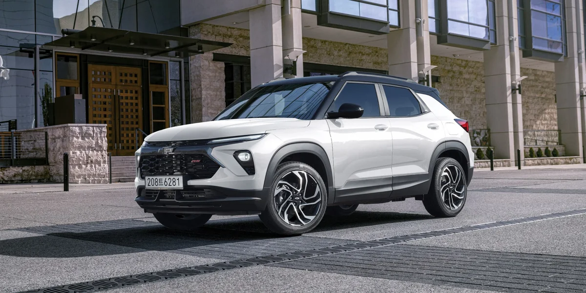
▲ 한국GM 공식 사이트 갤러리 속 트레일블레이저(2026년형 페이지). 한국 판매 모델은 CVT가 기본이다 ⓒ 한국GM 쉐보레 (chevrolet.co.kr 트레일블레이저 공식 갤러리)
한국에서 사륜구동을 원하면 구성이 고정돼 있다. 한국GM 가격표에 따르면 AWD는 RS 트림의 "스위처블 AWD 패키지" 하나로만 고를 수 있고, 가격은 240만 원이다. 이 패키지에는 스위처블 AWD 시스템과 하이드라매틱 9단 자동변속기, Z-링크 리어 서스펜션, 액티브 노이즈 캔슬레이션, 19인치 카본 플래시 머신드 알로이 휠, 일반 7스피커가 함께 들어간다. AWD만 따로 빼서 살 수는 없는 구조다. 한국GM은 이 시스템이 필요 없을 때 프로펠러 샤프트 회전을 끊어 FWD로 전환해 연비를 높이는 방식이라고 소개한다.
연비는 AWD가 11.6km/L(도심 10.7, 고속도로 12.7), CO₂ 배출량 146g/km다. FWD 17인치 모델은 12.9km/L(도심 12.1, 고속도로 14.0)이고 세 구성 모두 3등급이다. 한국형은 제3종 저공해차량으로 분류돼 지자체의 공영주차장 등 감면 혜택 대상이라고 가격표에 적혀 있다.
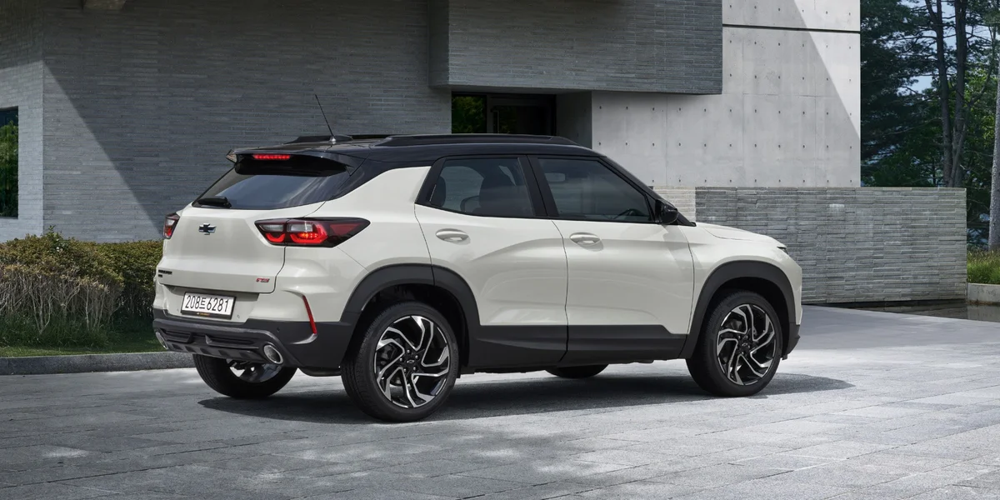
▲ 한국GM 공식 갤러리의 트레일블레이저 뒷모습. 한국 판매 사양의 트림은 Premier·RS 두 가지다 ⓒ 한국GM 쉐보레 (chevrolet.co.kr 트레일블레이저 공식 갤러리)
3. 사양·안전·커넥티드 — 미국은 화면과 보조 기능, 한국은 옵션 패키지
미국 2027년형의 사양 업그레이드는 "화면 키우기"와 "안전 사양 기본화"로 요약된다. 공식 페이지는 11.3인치 센터 터치스크린과 11인치 운전자 정보 디스플레이, 구글 빌트인과 제미나이(Gemini) 음성 비서, 무선 애플 카플레이·안드로이드 오토 기본을 내세운다. 온스타 베이식은 8년간 기본 제공이라고 적혀 있다(서비스 범위가 한국의 2년 무상과 같다고 단정할 수는 없다).
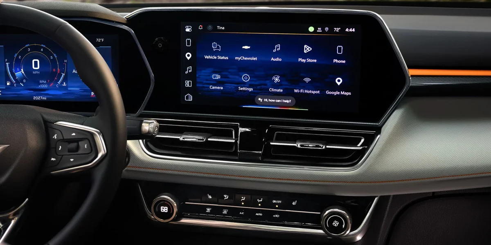
▲ 2027년형 대시보드. 11.3인치 센터 스크린과 11인치 정보 디스플레이가 나란히 놓였다 ⓒ Chevrolet (chevrolet.com 2027 트레일블레이저 공식 갤러리)
안전 사양은 "표준 20가지 이상"으로 소개된다. 공식 페이지의 목록에는 적응형 크루즈 컨트롤, 후방 자동 제동, 측면 자전거 경고, 교차로 자동 긴급제동, 후측방 교차 제동, 전·후방 주차 보조, 사각지대 조향 보조, 차선 변경 경고, 후석 안전벨트 표시, 세이프티 얼러트 시트 등이 들어 있다. 이 목록이 모든 트림에 기본이라는 뜻인지는 트림별 사양표까지는 확인하지 못했다.
| 항목 | 미국 2027년형 | 한국 판매 모델 |
|---|---|---|
| 센터 스크린 | 11.3인치 | 11인치 컬러 터치스크린 |
| 계기판 | 11인치 | 8인치 컬러 클러스터 |
| 음성 비서 | 구글 빌트인·제미나이 | 한국 페이지·가격표에서 확인하지 못함 |
| 무선 폰 프로젝션 | 기본 | 기본(무선 애플 카플레이·안드로이드 오토) |
| 적응형 크루즈·사각지대 경고 | 안전 20여 가지 목록에 포함(트림별 기본 여부는 미확인) | 드라이브 어시스트 패키지(80만 원)에 포함 |
| 온스타 | 베이식 8년 기본 | 인도 시점부터 2년 무상(이후 유료 전환, 요금제는 추후 공지) |
| 적재공간 | 최대 54.4 입방피트(앞 동반석까지 접으면 길이 8.5ft) | 한국 페이지에서 확인하지 못함 |
| 전동 테일게이트 | 오토센스 전동 리프트게이트 선택 | 컴포트 패키지(110만 원, Premier)·프리미엄 패키지(100만 원, RS)에 핸즈프리 전동 리프트게이트 |
출처: 쉐보레 미국 2027 트레일블레이저 페이지, 한국GM 2026년 10월 가격표. 한국 사양은 2026년형 기준이며 한국 2027년형 사양은 공개되지 않았다.
한국에서 눈에 띄는 점은 보조 기능의 일부가 패키지 선택 품목이라는 것이다. 한국 기본 사양에는 저속 자동 긴급제동, 전방충돌 경고, 차선이탈 경고·유지 보조, 전방 보행자 감지 제동, 6에어백, 후방주차 보조, 스마트 하이빔이 들어 있다. 일반 크루즈 컨트롤도 기본이지만 앞차 간격을 맞춰 주는 적응형은 아니다. 반면 적응형 크루즈 컨트롤(정차·재출발), 차선 변경 및 사각지대 경고, 후측방 경고는 드라이브 어시스트 패키지(80만 원)를 따로 골라야 한다.
비교 대상이 미국은 2027년형, 한국은 2026년형이라는 점은 감안해야 한다.
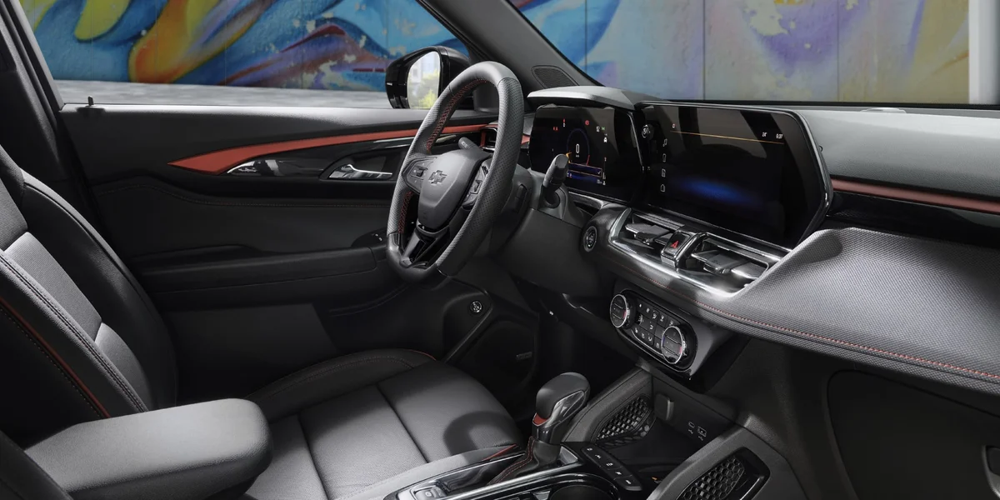
▲ 한국GM 갤러리의 실내 컷. 붉은 포인트 인테리어는 RS 구성(젯 블랙 & 레드 포인트 인테리어)의 특징으로 소개된다 ⓒ 한국GM 쉐보레 (chevrolet.co.kr 트레일블레이저 공식 갤러리)
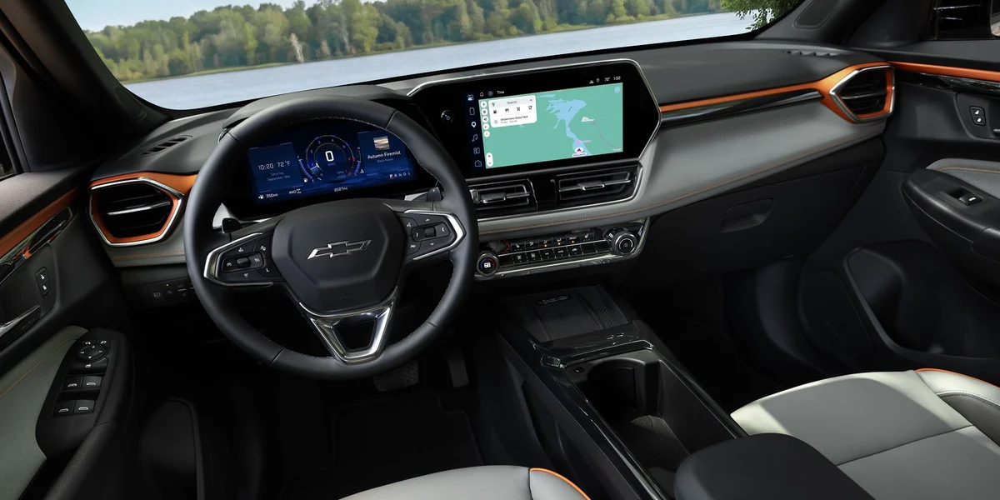
▲ 2027년형 실내 전경. 계기판과 센터 스크린 주변의 오렌지 포인트는 공식 소개상 Z71의 특징이다(이미지에 트림 표기는 없다) ⓒ Chevrolet (chevrolet.com 2027 트레일블레이저 공식 페이지)
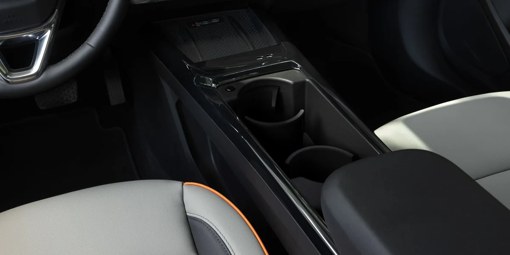
▲ 2027년형 새 센터 콘솔. 접이식 컵홀더와 수납공간이 늘었다고 공식 페이지는 설명한다 ⓒ Chevrolet (chevrolet.com 2027 트레일블레이저 공식 갤러리)
4. 가격 체계 — 미국은 트림이 갈라 놓고, 한국은 2트림에 패키지를 얹는다
두 시장은 가격을 매기는 방식부터 다르다. 미국은 트림이 사양 단계를 나누고, 한국은 두 트림 위에 패키지를 얹어 사양을 맞춘다. 아래는 각 공식 사이트에 적힌 숫자를 그대로 옮긴 것이다.
| 트림 | 시작 가격 | 공식 소개 특징 |
|---|---|---|
| LS | $23,600 | 17인치 실버 알로이, 11인치 터치스크린 |
| LT | $24,800 | LS 사양 + 17인치 하이글로스 블랙 휠, 키리스 오픈&스타트 |
| ACTIV | $28,200 | LT 사양 + 1.3L 터보, 오프로드 서스펜션 튜닝·스키드 플레이트 |
| RS | $28,200 | ACTIV 사양 + 19인치 휠, RS 배지(공식 "As shown" 구성가는 $28,595) |
출처: 쉐보레 미국 2026 트레일블레이저 페이지(2026년 10월 17일 확인). 해당 페이지 각주에 따르면 이 가격(MSRP)에는 목적지 운송비(destination freight), 세금, 등록비, 딜러 수수료, 옵션이 포함되지 않는다. 2027년형은 모두 "$XX,XXX"로 미공개.
2027년형 미국 가격은 공식적으로 발표되지 않았고, 쉐보레는 "2027년 늦봄에 공개"한다고 안내한다. 일부 매체가 GM 주문 가이드를 인용해 인상 폭을 전했으나 확인되지 않은 보도라 이 글에서는 싣지 않는다.
| 구분 | 가격(원) | 주요 내용 |
|---|---|---|
| Premier | 27,960,000 | 1.35 E-Turbo·CVT, 17인치 휠, 8인치 클러스터·11인치 터치스크린, 무선 폰 프로젝션, 열선 시트·스티어링 |
| RS | 30,960,000 | Premier 사양 + 18인치 RS 휠, 블랙 투톤 루프, 천공 천연가죽 시트, 듀얼존 에어컨, 1열 통풍시트, RS 전용 외장 |
| 드라이브 어시스트 패키지(Premier·RS) | 800,000 | 적응형 크루즈(정차·재출발), 차선 변경·사각지대 경고, 후측방 경고 |
| 컴포트 패키지(Premier) | 1,100,000 | 천공 천연가죽 시트, 운전석 8way 전동시트, 1열 통풍시트, 핸즈프리 전동 리프트게이트 |
| 미드나잇 에디션(신규, Premier 전용) | 1,500,000 | 18인치 글로스 블랙 휠, 블랙 그릴바·미러·루프랙·엠블럼 등. 드라이브 어시스트 패키지 포함, 모던 블랙 외장 전용 |
| 프리미엄 패키지(RS) | 1,000,000 | 핸즈프리 전동 리프트게이트, 무선 충전, 2열 USB, Bose 7스피커 |
| 파노라마 선루프(RS) | 1,200,000 | - |
| 스위처블 AWD 패키지(RS) | 2,400,000 | AWD, 9단 자동변속기, Z-링크 리어 서스펜션, ANC, 19인치 휠 |
출처: 한국GM 쉐보레 2026년 10월 가격표(PDF)·공식 트레일블레이저 페이지. 가격표에 개별소비세율 기준은 따로 적혀 있지 않았다. 스노우 화이트 펄 외장색은 15만 원이 추가된다. 미드나잇 에디션은 가격표 "선택품목 상세"에 적용 트림이 Premier로 적혀 있다. 가격은 설계·사양 변경 등으로 달라질 수 있다고 가격표에 명시돼 있다.
한국의 시작가는 Premier 2,796만 원, RS 3,096만 원이고 두 트림 차이는 300만 원이다. Premier에 미드나잇 에디션을 고르면 2,796만 원 + 150만 원 = 2,946만 원이다. 이 150만 원에는 80만 원짜리 드라이브 어시스트 패키지가 들어 있어, 외관 구성이 사실상 70만 원인 셈이다(본지 단순 합산). RS에 스위처블 AWD 패키지를 얹은 구성은 3,096만 원 + 240만 원 = 3,336만 원이다(본지 단순 합산, 다른 옵션 제외). AWD를 원하는 한국 소비자에게 현실적인 선택지는 RS 한 가지다. 한국GM 쉐보레 가격표 바로가기 2026년 10월 전차종 가격표 PDF
본지가 8월 6일 다룬 트레일블레이저 vs 셀토스 vs 코나 비교 기사는 당시 가격(2,430만 원부터, RS AWD 3,288만 원)이 한국GM 공식 가격표(Premier 2,796만 원, RS+AWD 3,336만 원)와 달라 2026년 10월 17일 정정했다. 한국GM 공식 사이트가 지금 보여주는 트림은 Premier와 RS 두 가지이고, 공식 페이지에는 "ACTIV 트림은 현재 판매 중인 사양이 아니다"라는 문구가 있다.
8월 기사가 어느 시점의 가격표를 따른 것인지는 지금 확인할 수 없다. 두 기사의 차이는 판매 구성과 가격표 시점이 달랐기 때문으로 보이며, 계약 전에는 가장 최근 가격표와 딜러 견적을 확인하는 편이 안전하다.
가격표에는 구매 혜택도 적혀 있다. 차량 구매 시 타이어 긴급수리 서비스를 5년간 무상 제공하고, 썬팅 또는 차량용품세트 중 하나를 고를 수 있다.
10월 프로모션 조건은 쉐보레·KGM 10월 프로모션 기사를, 같은 GM 한국 생산 라인의 트랙스 가격은 트랙스 2,199만 원 기사를 참고하면 된다. 한국GM 쉐보레 트레일블레이저 바로가기
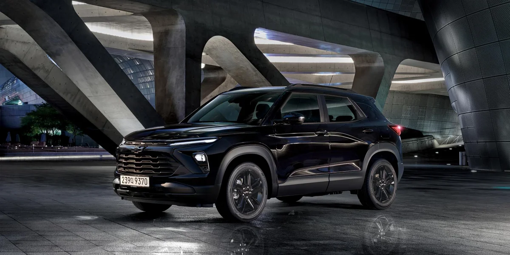
▲ 한국GM 공식 갤러리의 프리미어 미드나잇 에디션 컷. 차체·휠·그릴이 모두 검게 마감된다(공식 파일 경로의 premier-midnight 기준) ⓒ 한국GM 쉐보레 (chevrolet.co.kr 트레일블레이저 공식 페이지)
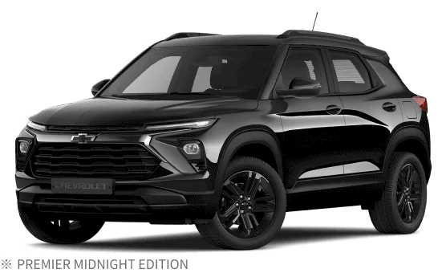
▲ 한국GM 공식 페이지의 "PREMIER MIDNIGHT EDITION" 표기 컷. 이 에디션은 Premier에만 적용되고 모던 블랙 외장에서만 고를 수 있다 ⓒ 한국GM 쉐보레 (chevrolet.co.kr 트레일블레이저 공식 페이지)
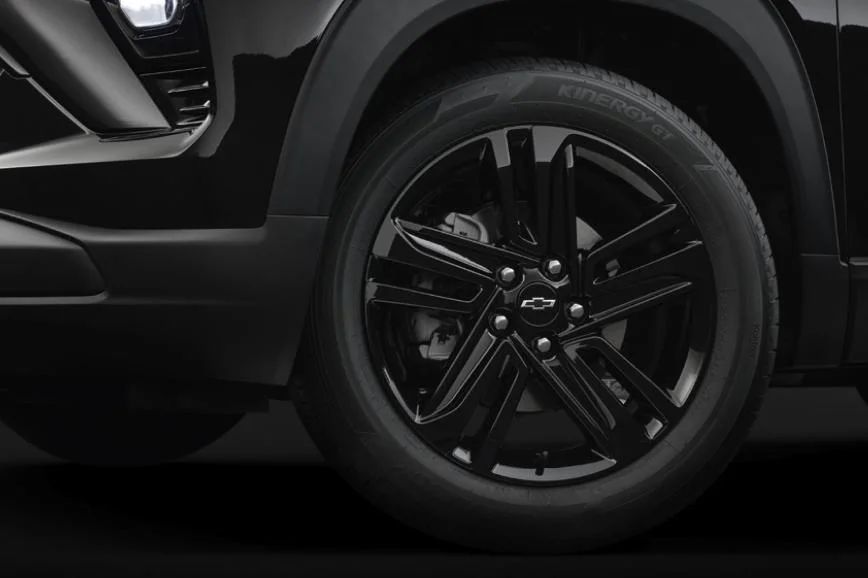
▲ 한국에서 새로 나온 미드나잇 에디션 소개 이미지. 글로스 블랙 알로이 휠이 핵심 포인트다 ⓒ 한국GM 쉐보레 (chevrolet.co.kr 트레일블레이저 공식 갤러리)
5. 한국에도 2027년형이 올까? 확인된 것과 아닌 것
한국GM의 2027년형 공식 출시 계획은 확인하지 못했다. 한국GM 공식 사이트의 트레일블레이저 페이지 제목은 "2026 THE NEW TRAILBLAZER"이고 가격표도 2026년형 구성이다. 미국의 Z71·11.3인치 스크린·구글 빌트인이 한국에 들어온다는 공식 발표는 없다.
본지가 8월에 다룬 포드의 한국차 관세 요구 기사에서 짚었듯, 트레일블레이저는 GM 한국사업장에서 만들어 미국에 수출하는 모델이다. 그래서 미국 사양이 바뀌면 한국형도 따라 달라질지 궁금해지지만, 이는 추측일 뿐 공식 확인된 내용은 없다. 한국형의 변경 여부는 한국GM 발표를 기다릴 수밖에 없다.
일부 국내 매체는 이번 2027년형이 부평공장에서 만들어지고 한국에 미국보다 먼저 나올 것으로 전망했다. 반면 외신은 쉐보레가 생산지를 밝히지 않았다고 전한다. 쉐보레 미국 공식 페이지에는 생산지와 한국 출시 언급이 없으므로, 이 글에서는 보도 수준의 전망으로만 소개한다.
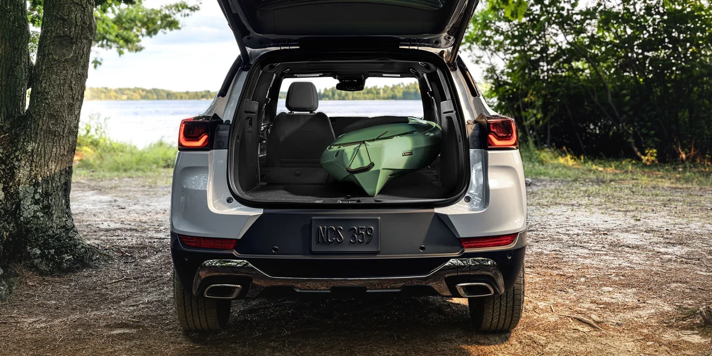
▲ 2027년형 짐칸. 공식 페이지는 뒷좌석을 접고 앞 동반석까지 눕히면 최대 54.4입방피트, 길이 8.5ft 공간이 나온다고 설명한다 ⓒ Chevrolet (chevrolet.com 2027 트레일블레이저 공식 갤러리)
✅ 구매·비교 전 체크포인트
· 미국 2027년형 가격은 공식 미공개($XX,XXX)다. 2026년형 가격(LS $23,600부터)과 섞어 쓰지 말 것
· 한국 가격은 2026년 10월 가격표 기준이며 개별소비세율 기준은 가격표에 명시돼 있지 않다. 미국 가격(MSRP)은 목적지 운송비를 포함하지 않는다. 옵션·세금 포함 견적은 딜러에서 확인
· 한국에서 AWD는 RS + 스위처블 AWD 패키지(240만 원) 하나뿐이다
· 미드나잇 에디션(150만 원)은 Premier 전용이며 RS에는 선택할 수 없다
· 미국 사양(Z71, 11.3인치 화면, 구글 빌트인)의 한국 도입 여부는 확인되지 않았다
· 엔트리 SUV 가격 경쟁은 미국에서도 거세다. 포드 2029년 엔트리 SUV 예고 기사에서 경쟁 구도를 볼 수 있다
6. 요약
2027년형 미국 트레일블레이저는 LT·RS·Z71 세 트림으로 정리되고, 1.3L 터보(155hp)가 기본이며 Z71은 AWD가 기본이다. 11.3인치 스크린·11인치 계기판·구글 제미나이·20가지 이상의 표준 안전 사양이 내세워졌고, 판매는 2027년 늦봄, 가격은 미공개다.
한국에서 파는 트레일블레이저는 Premier 2,796만 원·RS 3,096만 원부터이며, 1.35 E-Turbo(156ps)와 CVT 한 가지에 AWD는 RS 240만 원 패키지뿐이다. 한국 쪽은 2026년형 기준이라 미국 2027년형과 직접 비교할 때 연식 차이가 있고, 한국 2027년형 계획은 확인하지 못했다. 이 글의 수치는 2026년 10월 17일 공식 사이트 기준이다.